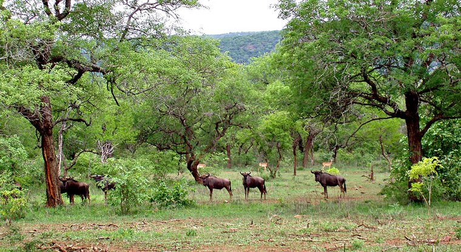

Conservando a Biodiversidade de Moçambique
A BIOFUND mobiliza e gere recursos para proteger ecossistemas vitais e comunidades.
Missão
Apoiar a conservação da biodiversidade terrestre, costeira, aquática e marinha, promover uso sustentável e consolidar o sistema nacional de áreas de conservação.
Visão
Ser uma entidade de referência em financiamento para conservação em Moçambique, promovendo valorização e proteção da natureza.
Valores
- Profissionalismo
- Eficiência
- Transparência
- Inclusão
Projetos Ambientais
Conheça os projetos em curso para conservação da biodiversidade em várias regiões de Moçambique.
Ver Projetos